RightsCase User Guide
The RightsCase database was created in 2009 by eQualit.ie. It is a web-based open source tool, built on the Drupal platform. Its purpose is to provide an efficient and secure method for recording and analysing human rights violation cases. RightCase was developed according to the needs expressed by human rights organisation and in consideration of existing case management efforts.
Users connect over a secure Internet channel to the server, log-in and interact with Rightscase using an Internet browser (preferably Firefox, Chrome, Safari, Opera).
The system architecture is built around the Case. Each Case consists of a summary, various people associated with the case (Actors) and a series of events that took place (Violations). A report is created at the conclusion of the case.

Once several cases have been recorded on the system, the user can view graphical representations of data and perform analytical tasks, such as juxtaposing one data set against another.

Each case has unique data variables including:
Case Name: the title for the case record in the system. May be standardised to the victim's name, internal ID, or other variable. The Case Name must be unique in the database
Date Of Intervention: when the organisation began working on this case
Reason
for Intervention: internal
reason/justification for working on the case
List options: Civil
rights violation, Compensation, Complaint, Human rights violation,
Investigation, Litigation, Medical attention
Assigned Staff: a member of the organisation (also database user)
Case Status: internal laSection 121 invokedbel to classify progress of the case. List options:
New
In
process : Awaiting trial, On trial, Awaiting judgment, On appeal
Litigation : Notice on intention to sue
served on perpetrators, Summons issued, Awaiting plea, Notice to plead and
intention to bar served on perpetrators, Further particulars requested,
Discovery stage, Pre-trial conference stage, Trial, Awaiting Judgment,
Released without charge
Closed : Made to pay admission of
guilt fine, Placement on remand refused, Further remand refused, Withdrawn
before plea, Discharged at the close of the State case, Acquitted,
Convicted, Judgment granted in favour of victim, Judgment granted against
victim, Absolution from the instance
Applicant Name: the person who is giving testimony on this case
Contact Details: the applicant's contact details
Case
Description: a
textbox to insert all other relevant details of the case
Allocated
Resources: a
textbox to list the organisation's resources devoted to the case
Plan of Action: a text-box to describe the plan of action to be taken by the organisation
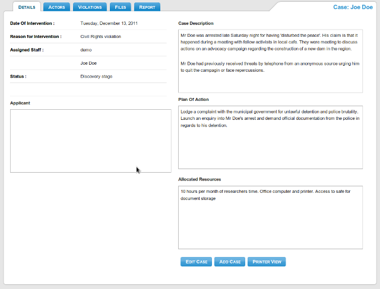
The Case Details screen (viewing mode)

The Case Details screen (edit mode)
Each case may have multiple actors associated with it. The term 'actor' refers to a person involved with the case. Actors are categorised into 'Witnesses', 'Perpetrators', and 'Victims' . The user selects 'Actors' from the Case menu bar and then selects the type of actor they would like to add or edit.
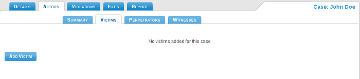
Each actor type is composed of the following variables:
Name: the Actor's name (will appear as the name for the particular actor record)
Date Of Birth: the Actor's date of birth
Date of Death: if relevant, the Actor's date of death
Gender: male, female or n/a
Political Affiliation: the Actor's political affiliation
State: whether the Actor is a
representative or employee of a State organisation
List options: Police,
Army, Intelligence, Immigration, Judiciary, Attorney General, Other, N/A
Non
State: the Actor's
social standing
List options: Militia,
NGO, Business, War Veteran, Private Individual, Teacher, Civil servant,
Miner, Journalist, Doctor, Politician, Other
Ethnicity:
the Actor's ethnicity
Contact Details: the Actor's contact details
Files: files relevant to the Actor can be uploaded through this function. The system will accept any type of document (see Files below)
Photo: the Actor's photo, preferably a
head-shot can be uploaded to the system. Accepted file types include .jpg,
.png, .gif A thumbnail is automatically generated
Testimony: text-box to record the Actor's
testimony
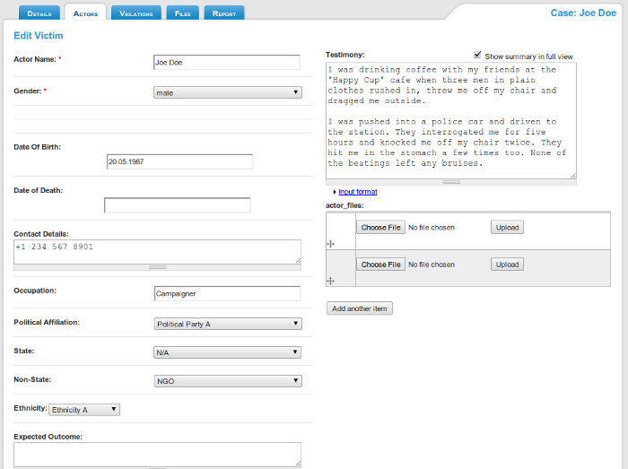
Actor Edit screen

Actor View screen
The user can create multiple Actors of the same type (e.g. Victims). They will be listed in alphabetical order of their name in the left hand column. On the Actors Summary screen, all existing Actors will be listed.
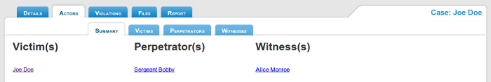
Each case may have multiple violations associated with it. A violation refers to a particular action and is related to the case. An existing Actor can be associated with a particular violation.
The user selects 'Violations' from the Case menu bar and then selects whether to add a new violation or edit an existing one.
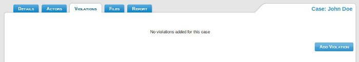
Each case may list one or several violation, composed of the following variables:
Actor association: select which of the existing actors in the case is directly related to this violation.
Violation Type: a menu with keywords used to describe this particular violation.
List options: (see Appendix)
International Standard: list
which of the international standards (as collated from the UN's Economic,
Social and Cultural Rights & Civil and Political Rights) have been
violated.
List options: (see Appendix)
Location: detail the location of the
violation
List options: Drop down to select Region
Map Reference: pinpoint the exact location of the violation on a Google Map. There are two ways to find a location. Zoom in to the required area using the mouse and the Map's navigation keys OR type in the location's name into the search box on the Map. Once you are at a level of zoom that allows you to accurately define the location of the violation, click the mouse button to place a marker there. You can place multiple markers for each violation. To delete a marker, select it with the mouse button (it will begin to bounce) and press the 'Delete Selected Marker' button.

Start Date: the date that the violation commenced
End
Date: the date that
the violation has ended
Chain of Events: text-box
to describe details of the violation
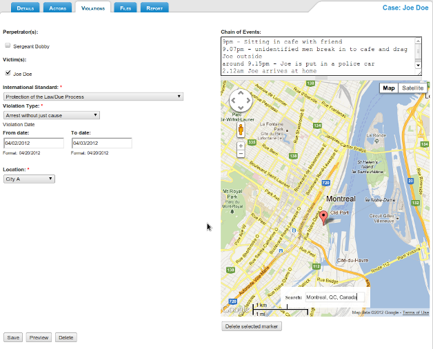
The user can create multiple Violations under the one case. The will be listed by their start date in the left hand column.
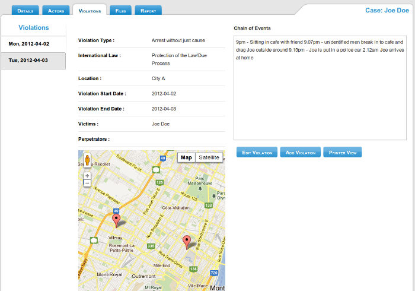
Files are uploaded via the Actor screen and are hence associated with that person. A summary of all files in a particular case can be seen on the Files tab.
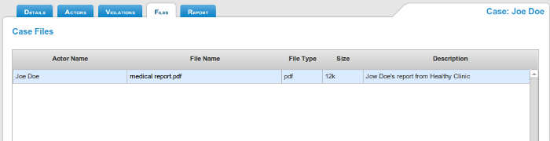
A
report is a free text area provided for each case, where the user may
create a full length narrative of the case.
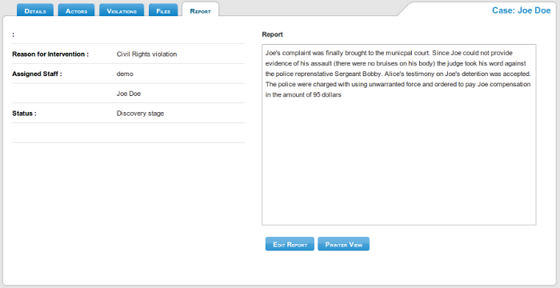
Particular cases or details relevant to a case can be located using the Search function. Likewise the user may specify a data range for the search, to locate all cases that will fall within it. For example, a search can be made for all cases originating in a particular locality, or those that have occurred during a specific period of time.
Search by Case: Allows the user to search within the Case Name and Case Description fields. Also, all cases assigned to a particular staff member can be displayed.
Allows the user to locate a particular Actor/s from the Case documents.
Search by Date: Allows the user to find all cases in which the organisation has intervened within the given date range.
Search by Region:Allows the user to locate all cases relevant to a given location.
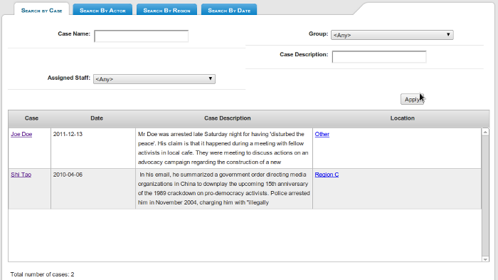
Free text search: Can be performed at any time and on all data fields of the database, by entering the search query in the top right-hand search bar.
This function of Debaser presents graphical representations of collected data. The user can select to view statistics of a particular dataset or juxtapose two or three different sets against each other. Graphs and pie charts can often tell a story in a more effective way than tables and lists of numbers. A mapping function can help identify trends in violations. The data is taken from all records accessible to the user and their group.

A bar chart showing the Victims by Gender
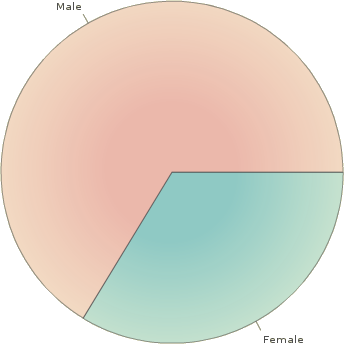
A pie chart is also generated
Within
every Violation there is a possibility to associate it with an Actor of
the same Case. This will allow you to create correlative statistics
combining Actors & Violations.
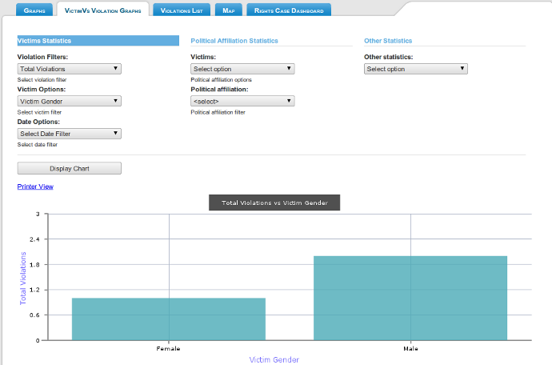
A bar chart displaying the age of victims, juxtaposed against their gender and according to the location of the violations
The Violations List will display a table tallying the number of Violationp Types that have been marked in all existing violations
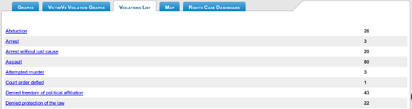
The Map can be used to display all Violation markers or sorted by a particular case or criteria.
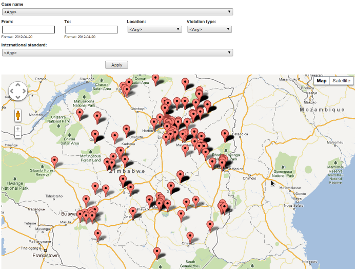
Users with 'manager' permissions also see a Dashboard summarising Cases and activities across the entire database
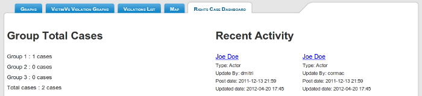
RightsCase is using strict security and login procedures to ensure the privacy and authenticity of users and the data they input. The hierarchy of access to is:
Project Manager > Group Membership > User
All users belong to a particular group. All users from the same group can only see cases created by other members of their group. The Project Manager has the ability to view (knot edit) all cases from all groups stored on the database.

Connections to RightsCase are made across an encrypted channel ensuring privacy of information sent and received to the system.
It
is also possible to nominate which computers can access the database to
further restrict login and limits opportunities for hacking the user
passwords
Data
stored on RightsCase is backed up to a secondary server.
Right
to self determination
Right to exploit natural wealth & resources
State duty to protect, promote & fulfil human rights
Non Discrimination/Equality
Right to Life
Prohibition of Torture or CIDT
Prohibition Against Slavery, Servitude & Forced Labour/Child Labour
Right to Liberty and Security of the Person
Equality before the law
Protection of the Law/Due Process
Protection from imprisonment for Debt
Freedom of Movement/Residence
Right to Privacy
Freedom of thought/conscience/religion
Freedom of expression
protection from hate Speech
Freedom of Association & Assembly
Right to Dignity & Intergrity
Right to marry and found a family
Right of Child to name, identity and nationality
Right to political participation
Right to culture, religion, language and protection against harmful
practices
Right to Work/decent working conditions/unionise/collective bargaining
Right to Social Security
Right to adequate standard of living – food, shelter, clothing
Right to the Highest Attainable Standard of mental & physical health
Right to education
Protection of Women
Protection of Children
Protection of Minorities (sexual orientation/migrants/disabled etc)
War crimes
Genocide & Ethnic Cleansing
Enforced disappearance
Displacement
Abduction
Arrest
Arrest without just cause
Assault
Attempted murder
Court order defied
Deliberate transmission of HIV/AIDS
Denied legal representation
Denied protection of the law
Deprivation of freedom of speech
Deprivation of right to food
Detention
Enforced Disappearance
Forced entry
Over-detention
Kept incommunicado
Lengthy interrogation
Personal security compromised
Physical abuse
Physical and psychological abuse
Psychological abuse
Denied freedom of political affiliation
Seizure of personal property
Statements recorded under duress
Torture and inhumane treatment
Unlawful arrest
Unlawful custody
Victimization of political party activisth